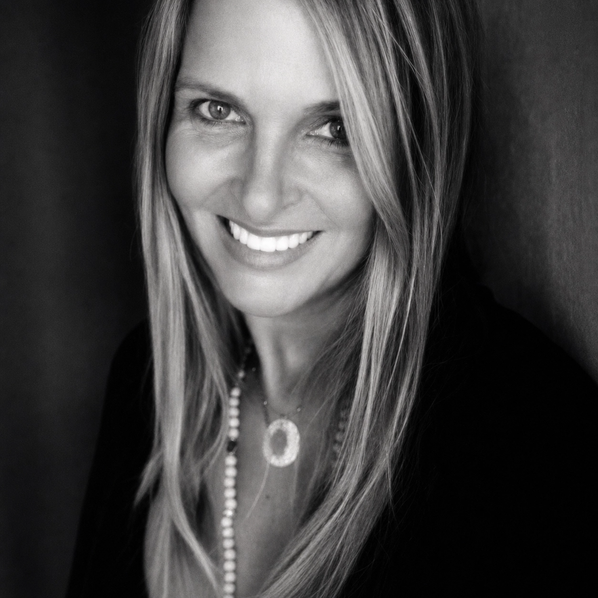
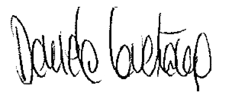

Diplomada en Dirección de Arte y Fotografía por el London College for the Applied Arts y formada en fotografía en GrisArt. Inició su trayectoria profesional en el ámbito de la dirección de arte y el diseño gráfico, colaborando con diversas agencias y estudios creativos. Más adelante orientó su carrera hacia el estilismo de decoración, trabajando para algunas de las principales revistas europeas de interiorismo y estilo de vida. Su inquietud por descubrir nuevas culturas la llevó a vivir varios años en Indonesia, principalmente en Bali, donde desarrolló una mirada fotográfica profundamente influenciada por el paisaje, la espiritualidad y la vida cotidiana de la isla.
Su trabajo busca capturar la belleza serena de los lugares, las personas y los pequeños detalles que revelan una historia. A través de la fotografía explora la relación entre luz, emoción y memoria, creando imágenes de carácter poético y atemporal.
Mi historia
Mi historia está muy vinculada a mi madre y Asia. Nací en Barcelona, en una ciudad que en 1970 seguía regida por el franquismo. En una familia de la burguesía catalana, con muchas reglas, muy parca en palabras y afectos, y con un padre profundamente autoritario. Mi tío bisabuelo fue Enrique Sagnier y esa unión con la ciudad fue muy presente en mi familia. Estudiaba en un colegio de monjas y vivía en un mundo cerrado, constreñido. Pero yo era una niña de espíritu libre. Desde pequeña comprendí que pertenecía a otro lugar.
En mis raíces estaban las respuestas a mis inquietudes. Una parte de mí pertenecía a unas islas al otro lado del mundo: Filipinas. Mi madre había nacido allí, en una familia mestiza —españoles y filipinos— que llevaba generaciones entrelazando orígenes. Mi madre, su modo de ser, su espíritu, eran los de una niña de la época colonial en las islas.
Creo que tenía unos cinco años la primera vez que fui a Filipinas, y lo recuerdo como si fuera hoy. Dicen que es imposible conservar recuerdos tan nítidos a esa edad, pero yo creo que cuando algo te impacta profundamente, se queda grabado. El olor al bajar del avión —esa mezcla de humedad, calor y Asia— me acompaña desde entonces. Es un aroma que me evoca, me calma, me hace sentir en casa. No tiene por qué ser Filipinas: es Asia. Cada vez que salgo de un avión allí, respiro hondo y siento que pertenezco a ese lugar.
Descubrí frutas nuevas, flores desconocidas. Descubrí que mi pelo, en el otro lado del mundo, era oro, y que mi piel tan blanca era un tesoro. Descubrí las sonrisas, la serenidad, esa forma de estar que los asiáticos han cultivado durante generaciones. Y me sentí bien. Aquello marcó el resto de mi vida. Nada volvió a ser igual. Fue una liberación total, porque al regresar a lo que era mi mundo, ya sabía que podía escapar cuando quisiera. Sabía que existía otro lugar, y esa certeza dejó una huella en mí: la posibilidad del escape, la posibilidad de ser otra.
Esa idea me acompañó en mi infancia, en mi adolescencia y después, en mi juventud. Siempre estaba allí, Asia, como una promesa. Viajé muchas veces, una y otra vez, buscando en cada viaje esa sensación de libertad. Muchos años después, tras haber encontrado mi camino profesional, haber tenido hijos y haber cumplido con todo lo que socialmente se esperaba de mí, me escapé. Cogí a mis hijos y me fui a vivir unos años a Bali. Allí me sentí completamente libre. Todo me acompañaba: la naturaleza, las sonrisas, el ritmo de la vida.
Mis fotos nacen de allí, de esa vocación que me habita. Al final, creo que logré lo que siempre deseé desde niña: vivir en Asia, sentir allí lo que siempre había sentido, y que mis hijos pudieran experimentar lo mismo, educarse entre dos mundos, entre dos continentes. Cada una de mis fotos intenta captar la belleza de lo que encuentro allí, lo que me toca el alma, lo que atraviesa mi mirada y revela mi esencia. Los ojos de aquella gente, tan limpios, tan poco complicados; sus sonrisas naturales, los niños que viven en la naturaleza y nada necesitan más que ella para sentirse completos. Los templos, la religión, las palmeras, los mares, las aguas, las nubes, las lluvias, las vidas tan precarias y, a la vez, tan llenas.
“Mi madre era Asia, y Asia es mi lugar.”
“No fotografío lo extraordinario. Fotografío aquello que solemos pasar por alto. Una mirada, una sonrisa, una flor, la luz sobre un paisaje. Pequeños instantes capaces de detenernos y recordarnos lo esencial.”

| Formación | Base | Idiomas |
|---|---|---|
| London College for the Applied Arts · GrisArt | Barcelona / Bali | ES / EN |